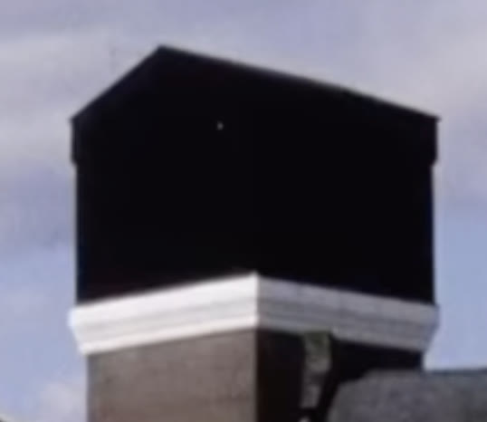
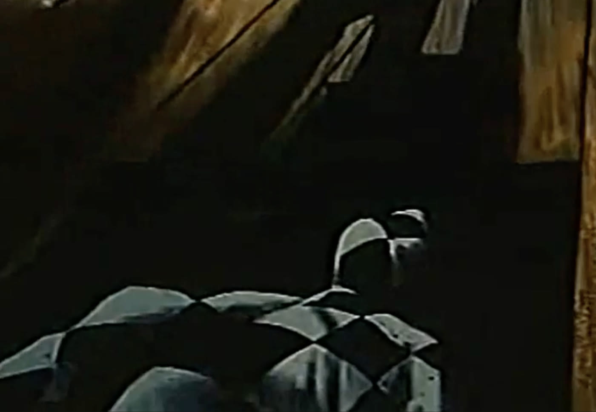
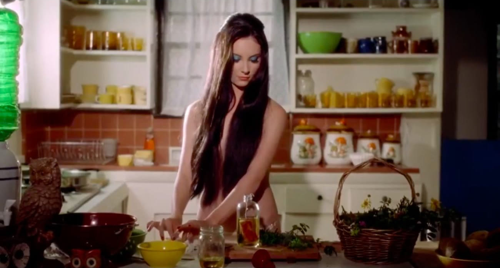
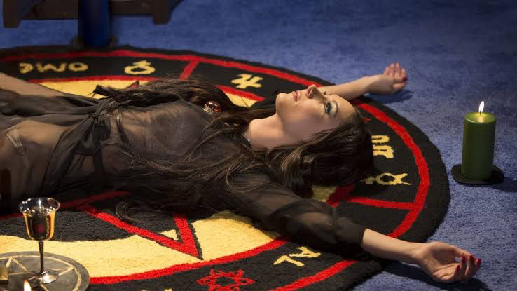
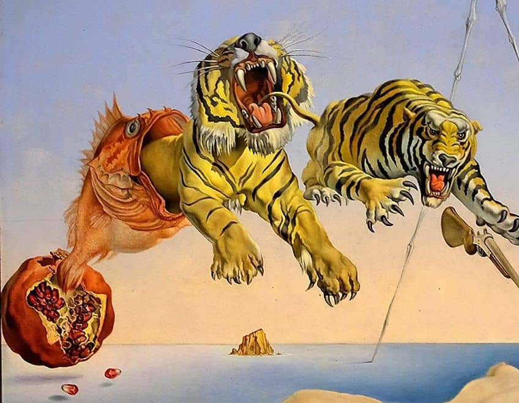
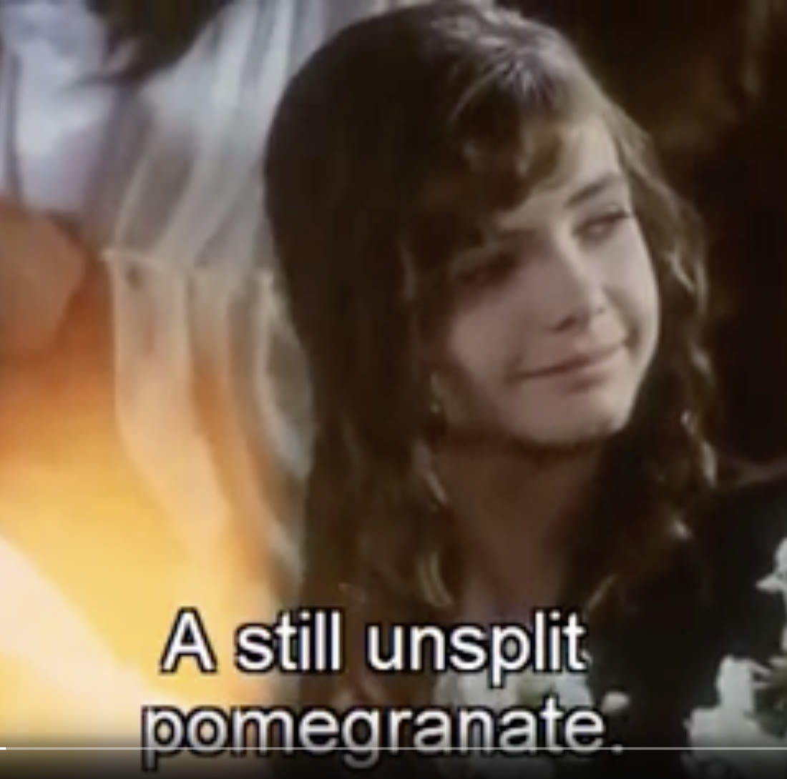
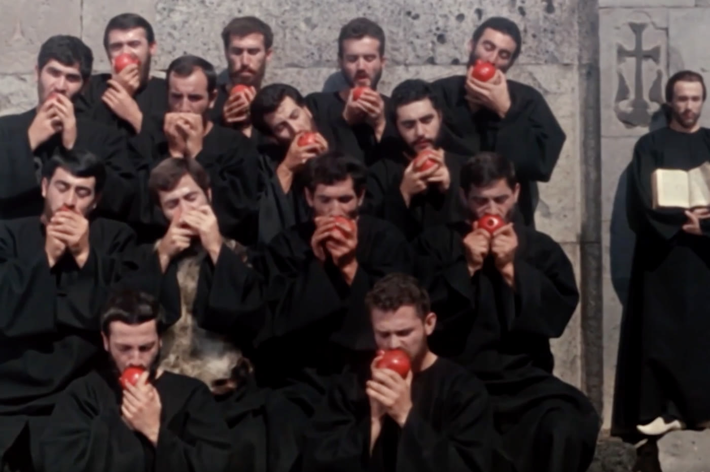

I am still thinking about that tower,
dark like Poe, deep in my thoughts buried, emerging just at those most inopportune times like some telltale heart, except instead of tearing up the floorboards to show one wants to show the most iconic visage of the sky itself and behind it, tower tower.

Who is this John Smith who creates and then disappears and leaving us to mourn and reimagine this sky in its blackness and would it drive us insane to know? To be the same? To feel this tower.

The darkness washes over me, cat, raven, something dark in the corner, buried alive, that strange laughter by the chains.

I now look to the window, and somehow this bottle of urine is a symbol of female power. We should have more sex more openly. Or it should remain in the forests. The fairies are our friends or, are they wild people wishing to consume and confuse.

Ah this price of civilization, keeping the Wiccans at bay, the would be wise hag who has known many things and yet … take me, take me to the other side.

Oh what a witch, I knew that vampires were real, and they are all around us, making our eroticisms tickle and looping us somewhere, somehow…

Along with pomegranates which we cannot defend against…

Somehow it is lurking behind the mind, this great fruity abyss. Shall we survive it? Ourselves lusty? Or is there another way?